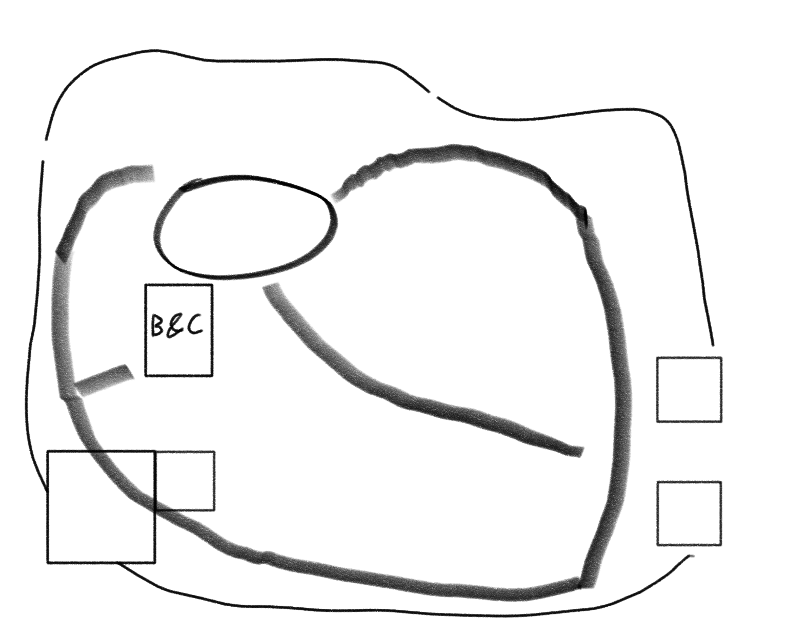

<<< Return to Contents
<<< Return to Trimor
The Red Blades are a domestic terrosim group founded in 3E-284, by General Commander Thria Bartek. They have taken over an abandoned fort at the top of the mouths of rivers leading into the lake just north of Fleydire.
They have already seeded themselves into the Crinegard Plains across the year 3e-286. Using a mysterious black goo, they can turn creatures into zombie-like depictions of their former selves. They plan to disrupt the Crimson Festival in Fleydire, on the opening night/day.
Layout
The eastern side of the emcampment shows two make-shift wooden forts, with an entrance between them. On either side are wooden logs shaved to make spikes, grouped together to make a fence line. This looks to go all the way around.
An old abandoned fort makes up the south-western end of the encampment. It has three stories, and a roof where you can see a few individuals watching over. It peaks over the entire emcampment.
A courtyard is at the northern end of the camp. It has a few tables set up, and some cooking pots. There is also a couple of tents with supplies.
Conversations
You catch them mid conversation. Bartek has her arms folded, leaning over a table, with a human individual in a dark deep green robe, standing elegantly, with their arms at their side.
Bartek: I don't care how they found out about it, I just want to know if they have discovered our other plans.
The human male starts to walk to the other side of the table.
Grunhofe: I can assure you Thria, the discovery of the Fleydarian assault was by shear luck, they cannot know of our next moves, only we two know this.
Bartek: Then can you see why I am fucking anxious Grunhofe? Only we knew of these attacks before they occurred. How can I know that it wasn't you, or one of your compatriates, who leaked this information?
The human male takes his hands from his side and places them on the table, confronting Bartek.
Grunhofe: Because Thria, we have a deal. You know that if you cannot accomplish what you want to do, I won't be able to get my end of the bargain, and then you are going to have a lot more to worry about than your pesky 'cleanse' being ruined.